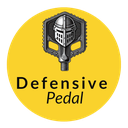

Research report · open access
The European Cycling Risk Index: Methodology, Validation, and a City-Level Analysis of 219 Cities
Abstract
We rank 219 European cities across 30 countries on the cycling risk of their street networks, using the per-road risk model that serves a production bicycle-routing service. Every public road in the coverage area — 67.3 million scored segments — contributes to three per-city dimensions: the risk of the street network itself, the risk of 210 standardised simulated journeys, and population-weighted low-stress accessibility. The underlying per-road score was validated against 3.98 billion measured bicycle passages and 1,169 serious injuries across 13 European regions; at the city level the index predicts measured serious-injury rates (rate ratio 0.79 [0.71–0.89] per +10 index points) and correlates with bicycle commuting share at ρ = 0.500. Ranks are published with 90% rank intervals from 2,000 method respecifications; the report analyses each dimension separately and profiles every city.
How to cite
Rotariu, V. (2026). The European Cycling Risk Index: Methodology, Validation, and a City-Level Analysis of 219 Cities. Defensive Pedal Research. https://doi.org/10.5281/zenodo.22771452
@techreport{rotariu2026eucycling,
author = {Rotariu, Victor},
title = {The European Cycling Risk Index: Methodology, Validation,
and a City-Level Analysis of 219 Cities},
institution = {Defensive Pedal Research},
year = {2026},
doi = {10.5281/zenodo.22771452},
url = {https://doi.org/10.5281/zenodo.22771452}
}
← Back to the ranking: Streets, Not Reputations